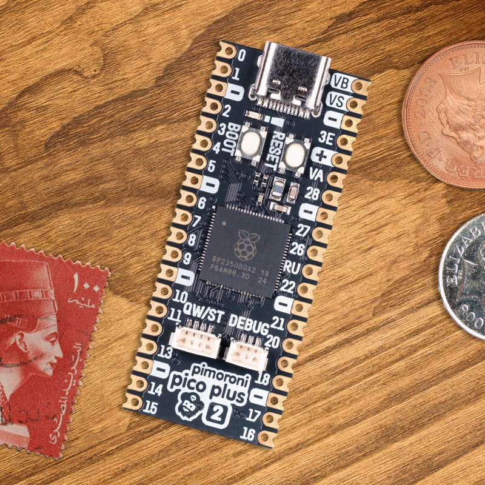

Pimoroni Pico Plus 2
The Pimoroni Pico Plus 2 is an RP2350B based board in the Raspberry Pi Pico form factor, with a USB-C connector, a large 16 MiB of flash and 8 MiB of external QSPI PSRAM.

Features
RP2350B microcontroller chip (QFN-80 variant)
Dual-core Arm Cortex-M33 processor running up to 150 MHz
520 KiB of internal SRAM
16 MiB of on-board QSPI flash memory
8 MiB of on-board QSPI PSRAM (APS6404) on chip select 1
USB-C connector, USB 1.1 host and device support
Qwiic / STEMMA QT (I2C) connector
SP/CE debug and expansion connectors
Reset and BOOTSEL buttons
48 multi-function GPIO pins broken out on castellated and through-hole pads
Drag & drop programming using mass storage over USB
12 Programmable IO (PIO) state machines for custom peripheral support
Serial Console
By default a serial console appears on GPIO0 (TX) and GPIO1 (RX). This console runs at 115200-8N1.
The board can be configured to use the USB connection as the serial console.
See the usbnsh configuration.
PSRAM
The distinguishing feature of the Pimoroni Pico Plus 2 is the 8 MiB of
external QSPI PSRAM (an APS6404 part) hanging off the QMI on chip select 1
(GPIO47). NuttX detects the PSRAM at boot, switches it to quad mode and
maps it read/write at 0x11000000.
PSRAM support is enabled by default in the nsh configuration
(CONFIG_RP23XX_PSRAM), which adds the 8 MiB to the main heap. The
chip select pin is configured with CONFIG_RP23XX_PSRAM_CS1_GPIO (47 on
this board) and the way the PSRAM is exposed to the memory manager (single
heap, separate heap, or user heap) is selectable. See the
RP23xx PSRAM section for the details of each mode.
Note
The PSRAM is considerably slower than the internal SRAM. The QMI is
shared with the flash: writing to the flash goes through the bootrom,
which resets the PSRAM configuration on chip select 1. The flash MTD
driver (RP23XX_FLASH_MTD) saves that configuration before each erase
or program and restores it afterwards.
Supported Capabilities
NuttX supports the following Pico Plus 2 capabilities:
UART (console port)
GPIO 0 (UART0 TX) and GPIO 1 (UART0 RX) are used for the console.
External QSPI PSRAM (8 MiB)
I2C
SPI (master only)
DMAC
PWM
ADC
Watchdog
USB device
MSC, CDC/ACM serial and composite devices are supported.
CDC/ACM serial device can be used for the console.
PIO (RP2350 Programmable I/O)
Flash ROM Boot
SRAM Boot
If the Pico SDK is available, a
nuttx.uf2file which can be used in BOOTSEL mode will be created.
Persistent flash filesystem in unused flash ROM
Installation
Download and install the toolchain and, optionally, the Raspberry Pi Pico SDK (needed to generate the
nuttx.uf2image).
$ git clone -b 2.2.0 --recurse-submodules https://github.com/raspberrypi/pico-sdk.git
$ export PICO_SDK_PATH=<absolute_path_to_pico-sdk_directory>
Configure and build NuttX
$ git clone https://github.com/apache/nuttx.git nuttx
$ git clone https://github.com/apache/nuttx-apps.git apps
$ cd nuttx
$ make distclean
$ ./tools/configure.sh pimoroni-pico-2-plus:nsh
$ make V=1
Connect the board to the USB port while pressing BOOTSEL. The board will be detected as a USB Mass Storage Device. Then copy
nuttx.uf2into the device (the same way as standard Pico SDK applications).To access the console, connect GPIO 0 and 1 to a device such as a USB-serial converter, or use the
usbnshconfiguration for a console over USB CDC/ACM.
Configurations
nsh
Basic NuttShell configuration (console enabled on UART0, at 115200 bps) with the external PSRAM added to the main heap.
usbnsh
Basic NuttShell configuration (console enabled via USB CDC/ACM).
smp
Basic NuttShell configuration (console enabled on UART0, at 115200 bps) with both Arm cores enabled.
pm
Power management (console on UART0, at 115200 bps). The idle governor
uses the standby state, and the dormant state 30 seconds after boot; a
character on the console receive pin (GPIO 1) wakes the board. Suspend to
RAM is available through the BOARDIOC_RP23XX_SUSPEND boardctl()
command, and /dev/rtc0 has an alarm.
audiopack
Configuration for the Pimoroni Pico Audio Pack.
composite
USB composite device configuration.
usbmsc
USB mass storage device configuration.
userled
Configuration demonstrating user-controlled LED access.
xipfs
XIPFS mounted on the on-board flash, with the xipfs command and the
XIPFS test suite.
xipfs-fdpic
Same as xipfs, plus the FDPIC module loader and the
fdpicxip demo, so the fdpic and reject sections of the XIPFS
test suite have something to run. The build makes the modules that both
load, so it needs arm-uclinuxfdpiceabi binutils. See
FDPIC Modules.
CONFIG_DEFAULT_TASK_STACKSIZE, and with it CONFIG_ELF_STACKSIZE, is
4096 here rather than the 2048 of the rest of the board. A module that calls into the firmware’s printf
family overflows 2048, and with no MPU that is a lockup rather than a
diagnostic.
xipfs-nxflat
Same as xipfs, plus the NXFLAT execute-in-place demo. Building this
configuration requires ldnxflat, which is not part of a standard
toolchain installation; see NXFLAT.